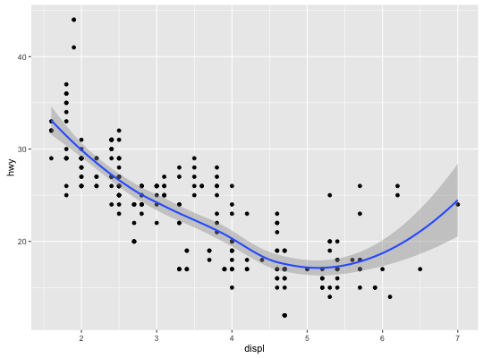
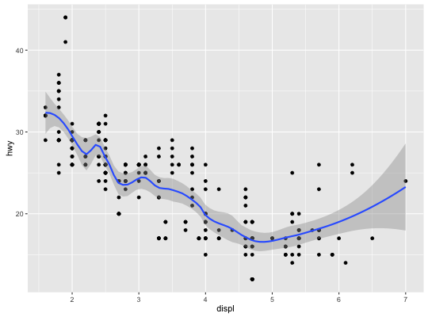
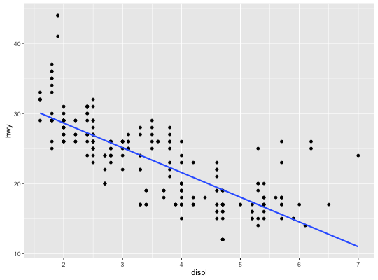
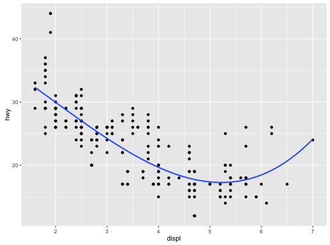
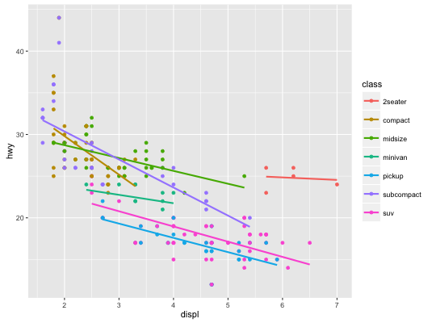
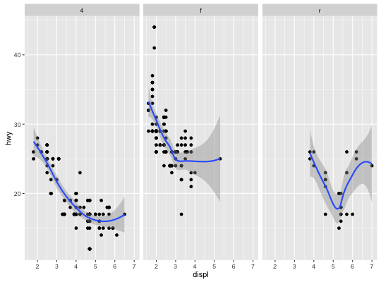

geom_smooth(mapping = NULL, data = NULL, stat = "smooth", method = "auto", formula = y ~ x, se = TRUE, position = "identity", show.legend = NA, inherit.aes = TRUE, ...)stat_smooth(mapping = NULL, data = NULL, geom = "smooth", position = "identity", method = "auto", formula = y ~ x, se = TRUE, n = 80, span = 0.75, fullrange = FALSE, level = 0.95, method.args = list(), na.rm = FALSE, show.legend = NA, inherit.aes = TRUE, ...)
aes or
aes_. If specified and inherit.aes = TRUE (the
default), is combined with the default mapping at the top level of the
plot. You only need to supply mapping if there isn't a mapping
defined for the plot.loess. For datasets
with 1000 or more observations defaults to gam, see gam
for more details.y ~ x,
y ~ poly(x, 2), y ~ log(x)NA, the default, includes if any aesthetics are mapped.
FALSE never includes, and TRUE always includes.FALSE, overrides the default aesthetics,
rather than combining with them. This is most useful for helper functions
that define both data and aesthetics and shouldn't inherit behaviour from
the default plot specification, e.g. borders.layer. There are
three types of arguments you can use here:
color = "red" or size = 3.
stat associated with the layer.
geom_smooth and stat_smooth.method.FALSE (the default), removes missing values with
a warning. If TRUE silently removes missing values.Aids the eye in seeing patterns in the presence of overplotting.
geom_smooth and stat_smooth are effectively aliases: they
both use the same arguments. Use geom_smooth unless you want to
display the results with a non-standard geom.
Calculation is performed by the (currently undocumented)
predictdf generic and its methods. For most methods the standard
error bounds are computed using the predict method - the
exceptions are loess which uses a t-based approximation, and
glm where the normal confidence interval is constructed on the link
scale, and then back-transformed to the response scale.
geom_smooth understands the following aesthetics (required aesthetics are in bold):
x
y
alpha
colour
fill
linetype
size
weight
ggplot(mpg, aes(displ, hwy)) + geom_point() + geom_smooth()
# Use span to control the "wiggliness" of the default loess smoother # The span is the fraction of points used to fit each local regression: # small numbers make a wigglier curve, larger numbers make a smoother curve. ggplot(mpg, aes(displ, hwy)) + geom_point() + geom_smooth(span = 0.3)
# Instead of a loess smooth, you can use any other modelling function: ggplot(mpg, aes(displ, hwy)) + geom_point() + geom_smooth(method = "lm", se = FALSE)
ggplot(mpg, aes(displ, hwy)) + geom_point() + geom_smooth(method = "lm", formula = y ~ splines::bs(x, 3), se = FALSE)
# Smoothes are automatically fit to each group (defined by categorical # aesthetics or the group aesthetic) and for each facet ggplot(mpg, aes(displ, hwy, colour = class)) + geom_point() + geom_smooth(se = FALSE, method = "lm")
ggplot(mpg, aes(displ, hwy)) + geom_point() + geom_smooth(span = 0.8) + facet_wrap(~drv)
## Not run: # # To fit a logistic regression, you need to coerce the values to # # a numeric vector lying between 0 and 1. # binomial_smooth <- function(...) { # geom_smooth(method = "glm", method.args = list(family = "binomial"), ...) # } # # ggplot(rpart::kyphosis, aes(Age, Kyphosis)) + # geom_jitter(height = 0.05) + # binomial_smooth() # # ggplot(rpart::kyphosis, aes(Age, as.numeric(Kyphosis) - 1)) + # geom_jitter(height = 0.05) + # binomial_smooth() # # ggplot(rpart::kyphosis, aes(Age, as.numeric(Kyphosis) - 1)) + # geom_jitter(height = 0.05) + # binomial_smooth(formula = y ~ splines::ns(x, 2)) # # # But in this case, it's probably better to fit the model yourself # # so you can exercise more control and see whether or not it's a good model # ## End(Not run)